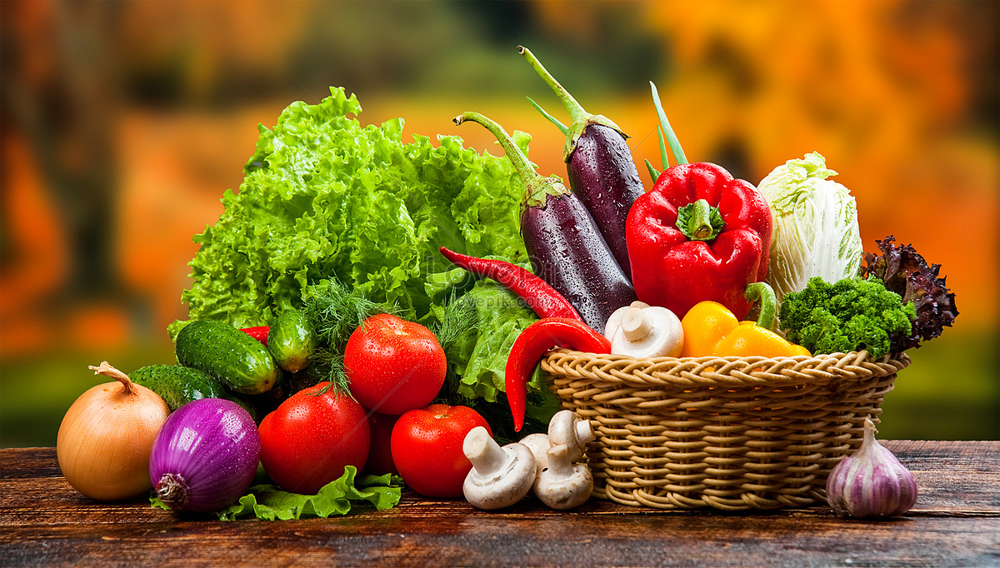

Vegetables
- Planting Season: Vegetables usually have specific growing seasons. Warm-season veggies (like tomatoes and peppers) should be planted after the last frost, while cool-season veggies (like lettuce and carrots) can be planted in early spring or late fall.
- Soil: Vegetables thrive in nutrient-rich, well-draining soil. Add compost or fertilizer for better yields.
- Spacing: Follow specific spacing requirements for each vegetable to allow airflow and prevent overcrowding.
- Watering: Most vegetables need consistent watering. Aim to keep the soil evenly moist, especially during dry spells.

Fruits
- Planting Season: Plant fruit-bearing plants based on their requirements; for example, strawberries do well in early spring, while melons prefer warmer soil.
- Soil: Ensure slightly acidic, nutrient-rich soil for berries. Melons prefer sandy, well-drained soil.
- Spacing: Fruit plants usually need ample space to spread. Strawberries can be spaced closer together, but melons need several feet between plants.
- Watering: Keep soil consistently moist, especially when fruits are forming, but avoid waterlogged soil to prevent rot.
Herbs
- Planting Season: Herbs like basil and mint thrive in the warm season, while rosemary is quite hardy and can grow year-round in mild climates.
- Soil: Most herbs prefer well-draining soil. Adding sand to the soil mix can improve drainage for herbs like rosemary.
- Spacing: Herbs generally don’t need much space, but some (like mint) can spread rapidly, so consider planting them in containers or separate sections.
- Watering: Herbs need regular, moderate watering, allowing the topsoil to dry between watering sessions to prevent root rot.
Grains
- Planting Season: Plant grains in spring or fall, depending on the type. Corn is a warm-season crop, while wheat can be grown in winter or spring.
- Soil: Grains need fertile, well-drained soil. Adding compost or manure before planting can enhance growth.
- Spacing: Corn requires 1-2 feet between rows for proper pollination. Wheat can be planted closer together in rows.
- Watering: Grains don’t require as much water as other plants, but ensure the soil stays moist, especially during germination.